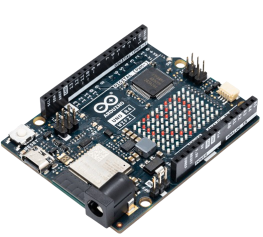

Resolução de problemas no Arduino

Em nossa terceira oficina, vamos explorar a resolução de problemas simples utilizando o Arduino. Para facilitar o acesso e garantir que todos possam participar de forma prática, usaremos a plataforma online Tinkercad, que permite simular circuitos e testar o código em um ambiente virtual. Nesta oficina, os participantes aprenderão a resolver desafios práticos no Arduino, aplicando conceitos de programação e eletrônica. Nosso objetivo é proporcionar uma experiência interativa e acessível, onde todos possam desenvolver suas habilidades e expandir o conhecimento na prática.